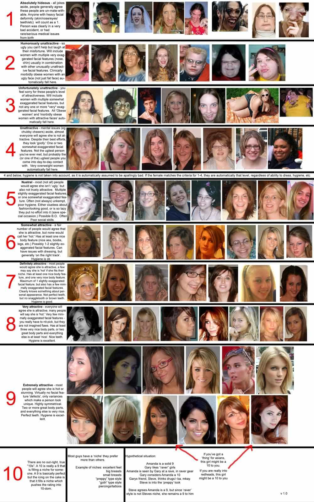

< < < Back
Debating The Mighty 1-to-10 Scale – Return Of Kings
Few subjects inspire more spirited debate between men than the 1-to-10 scale—the go-to metric for rating a girl’s viability as a sexual partner or arm candy. I’ve literally stayed up all night arguing with buddies about the theoretical underpinnings of the thing—from whether a 10 (“dime”) can actually exist in nature, to the irrelevancy of the “potential-girlfriend factor,” to the exact location of the barely bangable line.
I was also single-handedly responsible for having the once-great-but-now-shitty website HotOrNot blocked at my old job, when the IT department invariably realized how much a work-buddy and I would visit the site from my office computer. We’d sit there arguing for 5 minutes about whether a particular girl was a 5 or a 6, only to then discuss why after we’d arrived on a consensus. We’d then repeat the same ritual on the very next girl. This went on for entire afternoons during light days.
It seems like every few months I come across another attempt to settle the debate which, in the end, reeks of reductionism or hubris. This debate will never end because, like sports and politics, the joy is in the disagreement. Comparing women like commodities in a store display is man’s ancient, god-given right, inscribed in the hand of god on the inner walls of his scrotum.
The best we can do is chart the boundaries and features of the debate and hope to arrive on a détente—that we all can live with—so we can sit back down at the desk and keep rating girls.
The Binary Solution
This is reductionism at its worst. In sum, the argument goes that “there are only two types of women: bangable and not bangable.” Guys who subscribe to this belief claim to simply rate women as zeroes or ones. The laughable gaps in this logic are too easy, and numerous, to itemize. I usually just counter: that’s like rating a car driveable or not driveable.
Asymptotic Theory
One of the least controversial views is that there is, in fact, no such thing as a 10. A 10, on a 1-to-10 scale, implies perfection, and most guys—particularly those with our sensibilities—soundly reject the notion of flawlessness among women. The scale goes in whole numbers (with occasional allowances for halves) until you get to 9. After that, you can approach 10, but you can never reach it. Some guys increase granularity into the tenths after 9 (e.g., 9.2), but that itself is a matter of controversy.
The Pictorial Concept
This is a novel solution that has been impressively executed by various sources. While some of the more impressive iterations use methodologies that most men can stand behind—accounting for personal taste, pegging a girl’s rating to the number of “highlights” a she has, and putting pictures to black-and-white abstractions—it still suffers from an array of logical imperfections that keep it from being authoritative (e.g., an over-emphasis on factors under human control, such as makeup or hygiene, rather than a raw score).

Extremism, Pride, and Emotion
A regrettable feature of the 1-to-10 debates is that a lot of guys succumb to emotion in their ratings, rather than producing even-handed, consistent assessments based on logic. I’ve seen guys reflexively rate a girl a “1!” despite the fact that, while unquestionably unattractive, she was a probably no worse than a 3. I’ve also see guys do the opposite, which is no less annoying: declaring a girl “a dime!” when she’s no more than a 7 with an inch of caked-on makeup, high heels, and a Photoshop filter. Guys are also subject to inflate the numbers of their own catches, while holding everyone else’s girls to a higher standard.
The Bangability Line
Another matter of contention is settling on the location of the barely bangable line. While I find that a majority of men (myself included) now set that line at 5, others set it as high as 7. Placing the line that high tells me that a man’s scale likely suffers from inflation, with bottlenecking at the very top of the range. The implication—which is rarely true—is that he only bangs 8s and 9s.
The Embarrassment Metric
To my knowledge, I’m the originator of this framework, though I’m certain many other guys will be quick to claim it as their own. Because female beauty is a quantifiable commodity that both men and women recognize as a status symbol for the men who can capture it, people’s expected reaction to a girl is as reliable a barometer as we have for objectively measuring a girl. How embarrassed—and conversely, proud—in other words, you’d be at being seen with a girl (especially by your buddies, ex-girlfriends, and haters) is the best way to determine a score.
My personal scale, which is strongly pegged to the Embarrasment Metric and Asymptotic Theory looks like this, summarized:
0: No Such Thing. Has a dick.
1: Hideously Unattractive. A monster. Disfigured or irretrievably mutilated. Has two heads, is missing an eye, etc.
2: Very Unattractive. Disproportionate, morbidly obese.
3: Unattractive. Ugly, fat, and/or old.
4: Almost Bangable. But definitely doesn’t pass the boner test. Still not good-looking.
5: Merely Bangable. Barely passes the boner test. You’d be pretty embarrassed to be seen with her.
6: Almost Cute. She might be cute if one or two things were different, but they’re not. You may not be super-embarrassed to be seen with her, but you certainly wouldn’t be proud, and you definitely wouldn’t willingly bring her around to anything.
7: Solidly Cute. Zero embarrassment, even some nascent pride in being seen with her. You could bring her to things without looking bad, or losing any of the luster on your game.
8: Hot-Cute. Would be straight-up proud to be seen with her and/or bring her to things. This is often the sweet spot for long-term relationship material.
9: Smoking Hot. This is a girl who can easily monetize her beauty. You’re going out of your way to be seen with her.
10: Perfection. A theoretical abstraction that only exists in the laboratory.
I use halves (.5s) to achieve a little more precision. The idea is that a girl who’s almost at that next level—but doesn’t quite have it takes to get the rating outright—will get a .5. I’ll also occasionally grant (or deduct) halves for “intangibles”—things like extraordinary sweetness (or bitchiness), a sexy vibe (or awkwardness), or a personal preference (though I’m quick to disclose the latter).
Judicious and honest application of the 1-to-10 scale is an essential part of guy talk. I doubt we’ll ever fully agree but—whether you accept my version, somebody else’s, or have your own exotic A-to-Z scale—strive for consistency and responsibility in your ratings.
Read More: The 5 Commandments of Online Dating


{kind=link}
{kind=link}
{kind=link}